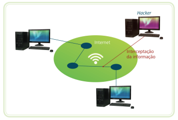
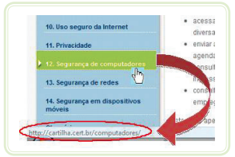

O que é um antivírus e por que usar?
- ▶ Antivírus é um programa que protege seu computador ou celular contra ameaças, como vírus, malwares, trojans, e spyware.
- ▶ Ele monitora o que é baixado, os sites acessados e os arquivos que você abre.
- ▶ Ajuda a evitar o roubo de dados, danos ao sistema e perda de arquivos importantes.
- ▶ Existem antivírus pagos e gratuitos. Mesmo os gratuitos oferecem proteção básica eficiente.
Exemplos de antivírus confiáveis: Avast, AVG, Kaspersky, Windows Defender (já vem no Windows 10 e 11).
Atualizações automáticas
- ▶ Manter o sistema operacional, o navegador e o antivírus sempre atualizados é essencial.
- ▶ Atualizações corrigem falhas de segurança que podem ser exploradas por hackers.
- ▶ Ative a opção de atualização automática quando possível, tanto no computador quanto no celular.
Cuidados com senhas, links suspeitos e e-mails falsos
Quando estamos lidando com troca de informações entre computadores à distância, temos que atentar para os perigos que existem nessas atividades. É fácil deduzir que, se uma informação é transmitida de um equipamento para outro, existe um canal de transmissão por onde trafegam esses dados e, seja o canal e a rede que for, eles podem ser interceptados por pessoas inescrupulosas. A interceptação de informações sem autorização é um ato ilícito e é previsto em lei como crime. Fazendo uma comparação simples, é como se alguém violasse uma carta endereçada a você.
Fonte: CTISM (Imagem da apostila "Informática Básica" da UFSM)
- ▶ Utilize senhas fortes.
- ▶ Verifique se o site é seguro
- ▶ Cuidado com links suspeitos, desconfie!
- ▶ Desconfie de quem pede seus dados pessoais, especialmente por e-mail e WhatsApp.
Use letras, números e caracteres especiais.
Veja se o site começa com https:// e possui um cadeado na URL.
Para ver o link que você será direcionado antes de clicar, você pode passar com o mouse encima do mesmo que o endereço do objeto aparecerá no canto inferior esquerdo da tela, como mostrado na imagem a seguir:
Fonte: Autores da Apostila "Informática Básica" da UFSM
Outra dica é verificar que o link não te direciona para um arquivo com extensões como ".exe" ou ".scr", pois trata-se de um programa executável que pode ser um vírus.
Se achar suspeito, busque o site oficial antes de enviar para verificar se o contato é oficial.
Boas práticas de navegação segura
- ▶ Cuidado com WI-FI público!
- ▶ Utilize autentificação de dois fatores!
- ▶ Downloads ilegal de filmes, músicas e etc
Evite acessar conta do banco ou outros dados sensíveis em redes públicas de internet, dê preferência a utilização de dados móveis.
Ative essa configuração especialmente em aplicativos com muitos dados sensíveis, a verificação ocorrerá normalmente por SMS ou outros aplicativos.
Também existem aplicativos próprios para isso como o "Authenticator" da Microsoft e o da Google, ambos disponíveis em lojas de aplicativos.
Evite realizar downloads de filmes e músicas ilegais, isso porque em muitos arquivos de downloads são escondidos vírus que podem roubar suas senhas ou causar um prejuízo para seu computador.
⚠️ Golpes mais comuns
- ▶ Falsos boletos por e-mail
- ▶ Mensagens no WhatsApp com links de sorteios
- ▶ Golpes do PIX ou de “parente pedindo dinheiro”
- ▶ Sites de compras falsos
- ▶ SMS de "bancos" que notificaram sobre compra suspeita com o número de contato
- ▶ Liberação de crédito para empréstimo via WhatsApp e SMS